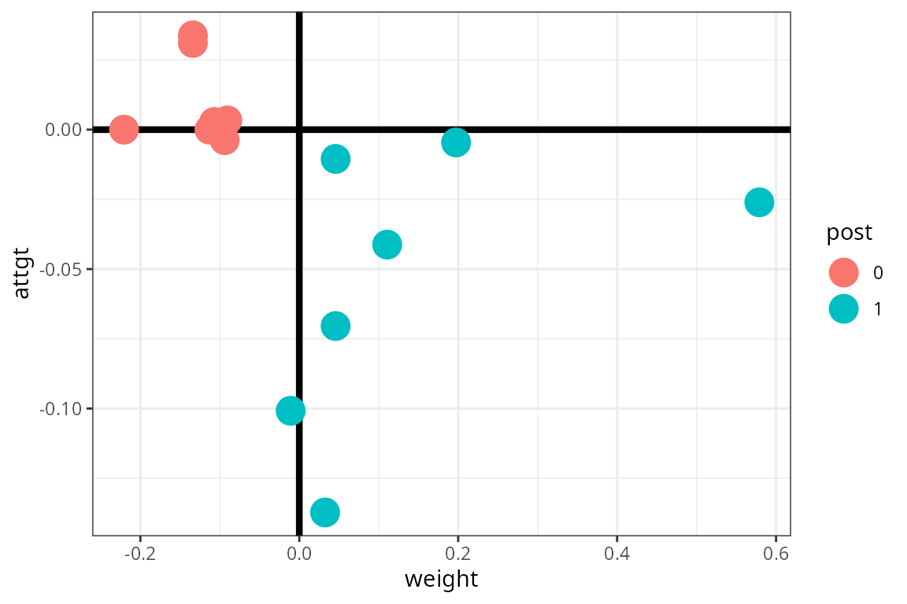
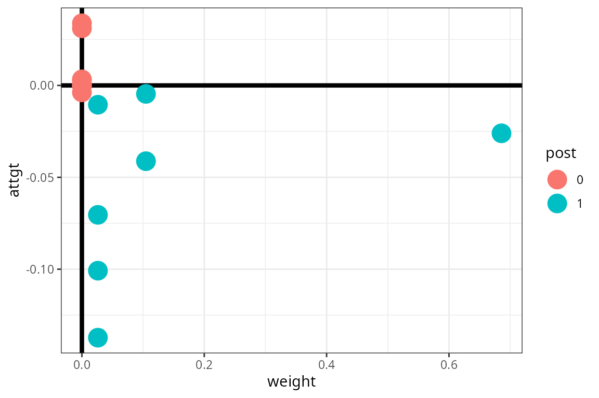

With staggered treatment adoption, the coefficient on the treatment indicator from a two-way fixed effects (TWFE) regression,
is a weighted sum of group-time average treatment effects,
,
the average effect for units first treated in period
(group
)
in period
(de Chaisemartin and D’Haultfoeuille, 2020; Goodman-Bacon, 2021). This
vignette shows how to recover those weights with
twfe_weights(), and how to compare them with the weights
behind the overall average treatment effects of Callaway and Sant’Anna
(2021), from attO_weights() and
att_simple_weights().
Data and group-time average treatment effects
The example uses the county-level minimum wage data in the
did package: lemp is log teen employment, and
first.treat is the year a county’s state first raised its
minimum wage (0 for counties never treated in the sample).
library(twfeweights)
library(did)
data(mpdta, package = "did")twfe_weights() takes the output of
did::att_gt(). Two choices matter. The comparison group
must be the never-treated group, and the base period must be
"universal": every
,
including pre-treatment ones, is then measured relative to period
,
which is what makes the TWFE decomposition exact.
attgt <- att_gt(
yname = "lemp", tname = "year", idname = "countyreal",
gname = "first.treat", data = mpdta,
control_group = "nevertreated", base_period = "universal",
bstrap = FALSE, cband = FALSE
)TWFE weights
tw <- twfe_weights(attgt)
tw$weights_df
#> group time.period weight attgt post
#> 1 2004 2003 -0.11307547 0.000000000 0
#> 2 2004 2004 0.04571981 -0.010503246 1
#> 3 2004 2005 0.04571981 -0.070423158 1
#> 4 2004 2006 0.03248687 -0.137258739 1
#> 5 2004 2007 -0.01085101 -0.100811363 1
#> 6 2006 2003 -0.09382154 -0.003769294 0
#> 7 2006 2004 -0.10705448 0.002750819 0
#> 8 2006 2005 -0.10705448 0.000000000 0
#> 9 2006 2006 0.19730313 -0.004594607 1
#> 10 2006 2007 0.11062737 -0.041224472 1
#> 11 2007 2003 -0.09057616 0.003306357 0
#> 12 2007 2004 -0.13391404 0.033813012 0
#> 13 2007 2005 -0.13391404 0.031087119 0
#> 14 2007 2006 -0.22058979 0.000000000 0
#> 15 2007 2007 0.57899403 -0.026054411 1Each row is a group-time cell, with its TWFE weight, the estimated , and whether the cell is post-treatment. The weighted sum of the reproduces the TWFE coefficient:
sum(tw$weights_df$weight * tw$weights_df$attgt)
#> [1] -0.03654894
mpdta$D <- 1 * (mpdta$year >= mpdta$first.treat & mpdta$first.treat > 0)
coef(fixest::feols(lemp ~ D | countyreal + year, data = mpdta))
#> D
#> -0.03654894Three features of the weights are worth checking in any application.
Post-treatment weights sum to one, but some can be negative. Here the cell for the 2004 group in 2007, its longest exposure, gets a negative weight:
post <- tw$weights_df$post == 1
sum(tw$weights_df$weight[post])
#> [1] 1
tw$weights_df[post & tw$weights_df$weight < 0, ]
#> group time.period weight attgt post
#> 5 2004 2007 -0.01085101 -0.1008114 1Pre-treatment cells get non-zero weight. Under parallel trends (and no anticipation), pre-treatment are zero, so this part of the TWFE estimate should be close to zero. When parallel trends fails in pre-treatment periods, these terms feed directly into the TWFE estimate.
c(
post_part = sum(tw$weights_df$weight[post] * tw$weights_df$attgt[post]),
pre_part = sum(tw$weights_df$weight[!post] * tw$weights_df$attgt[!post])
)
#> post_part pre_part
#> -0.027617574 -0.008931362The weights depend on the timing of treatment, not on how
much each cell matters for a target parameter.
ggtwfeweights() plots each cell’s weight against its
:
ggtwfeweights(tw)
Weights behind overall average treatment effects
Callaway and Sant’Anna (2021) propose combining the
with weights chosen to target a specific parameter.
attO_weights() gives the weights for
,
which averages each group’s post-treatment effects and then averages
across groups by group size; att_simple_weights() gives the
weights for
,
which weights every post-treatment cell by group size, so groups
observed for more post-treatment periods count more. Both put zero
weight on pre-treatment cells, and their weights are non-negative.
wo <- attO_weights(attgt)
ws <- att_simple_weights(attgt)
c(
TWFE = sum(tw$weights_df$weight * tw$weights_df$attgt),
ATT_o = sum(wo$weights_df$weight * wo$weights_df$attgt),
ATT_simple = sum(ws$weights_df$weight * ws$weights_df$attgt)
)
#> TWFE ATT_o ATT_simple
#> -0.03654894 -0.03101828 -0.03995128These match the "group" and "simple"
aggregations in did::aggte():
aggte(attgt, type = "group", bstrap = FALSE)$overall.att
#> [1] -0.03101828
aggte(attgt, type = "simple", bstrap = FALSE)$overall.att
#> [1] -0.03995128Placing the weights side by side shows where the estimates differ: TWFE puts less weight on long exposures, negative weight on some cells, and non-zero weight on pre-treatment cells.
comparison <- data.frame(
group = tw$weights_df$group,
time.period = tw$weights_df$time.period,
post = tw$weights_df$post,
attgt = tw$weights_df$attgt,
TWFE = tw$weights_df$weight,
ATT_o = wo$weights_df$weight,
ATT_simple = ws$weights_df$weight
)
comparison[comparison$post == 1, ]
#> group time.period post attgt TWFE ATT_o ATT_simple
#> 2 2004 2004 1 -0.010503246 0.04571981 0.02617801 0.06872852
#> 3 2004 2005 1 -0.070423158 0.04571981 0.02617801 0.06872852
#> 4 2004 2006 1 -0.137258739 0.03248687 0.02617801 0.06872852
#> 5 2004 2007 1 -0.100811363 -0.01085101 0.02617801 0.06872852
#> 9 2006 2006 1 -0.004594607 0.19730313 0.10471204 0.13745704
#> 10 2006 2007 1 -0.041224472 0.11062737 0.10471204 0.13745704
#> 15 2007 2007 1 -0.026054411 0.57899403 0.68586387 0.45017182
ggtwfeweights(wo)
Sampling weights
If did::att_gt() is called with
weightsname, all three functions use the same sampling
weights by default, so twfe_weights() reproduces a weighted
TWFE regression (e.g.,
fixest::feols(..., weights = ~w)).
References
Callaway, Brantly and Pedro H. C. Sant’Anna. “Difference-in-Differences with Multiple Time Periods.” Journal of Econometrics 225.2 (2021): 200-230.
de Chaisemartin, Clement and Xavier D’Haultfoeuille. “Two-Way Fixed Effects Estimators with Heterogeneous Treatment Effects.” American Economic Review 110.9 (2020): 2964-2996.
Goodman-Bacon, Andrew. “Difference-in-Differences with Variation in Treatment Timing.” Journal of Econometrics 225.2 (2021): 254-277.